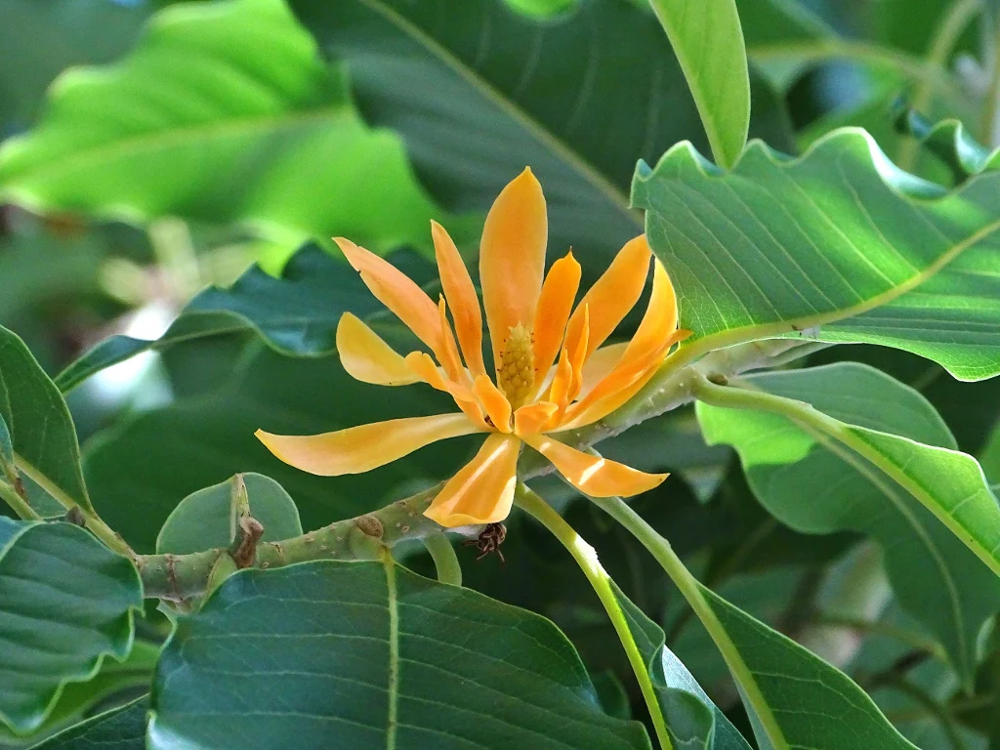

Introduction:
Michelia champaca, now classified under the genus Magnolia as Magnolia champaca, is a fragrant flowering tree native to South Asia and Southeast Asia. Known for its bright yellow or orange blooms, which exude a heavy, sultry scent, this tree has been a part of the region's cultural fabric for centuries, often planted in temples and gardens. The flowers are highly valued not just for their delightful fragrance but also for their use in traditional medicines and perfumes.
Michelia_champaca: Dangers ahead
Despite its popularity, Michelia champaca faces threats from habitat destruction and overharvesting for its timber and aromatic flowers, leading to its status as a vulnerable species in certain regions. Its preservation is essential, not only for its own survival but also for the cultural traditions and ecosystems it supports.
Features that Define Michelia_champaca
- Aromatic Blossoms: The tree is renowned for its intensely fragrant flowers, which emit a rich, sweet perfume. The blooms are a vibrant yellow or orange and are highly prized in the perfume industry.
- Evergreen Foliage: As an evergreen species, Michelia champaca retains its glossy, deep green leaves throughout the year, contributing to its aesthetic appeal and its role as a shade tree in warm climates..
- Medicinal Properties: The plant has a storied history in traditional medicine, where various parts of the tree, including the bark, flowers, and leaves, are used to treat a range of ailments..
- Cultural Significance: Beyond its physical beauty, Michelia champaca holds significant cultural importance in its native regions, often associated with love, spirituality, and divine beauty. It is commonly found in temple gardens and is used in religious and ceremonial offerings.
The Seed of Inspiration
The Michelia champaca stands as a beacon of natural allure and cultural reverence. From its deeply fragrant blossoms to its evergreen leaves, this tree has sparked artistic and spiritual creativity across generations. In its native lands, it's a symbol of divine beauty and purity, often accompanying rituals and sacred ceremonies. The seeds of Michelia champaca, thus, sow more than just the physical tree; they plant ideas, traditions, and a legacy that transcends the soil it grows from, inspiring poetry, perfumery, and a profound connection with nature.
Conclusion: Michelia_champaca from a Garden in Nepal
In conclusion, the Michelia champaca is more than just a tree; it is a living embodiment of heritage and harmony between nature and culture. Its yellow blossoms are not only a feast for the senses but also a cherished part of the botanical world, symbolizing resilience and the enduring human spirit. As it faces environmental challenges, the Michelia champaca reminds us of our responsibility to the Earth, urging us to protect the delicate balance of ecosystems. Its continued presence in our world is a testament to the beauty and strength that come from nurturing and respecting the natural environment.